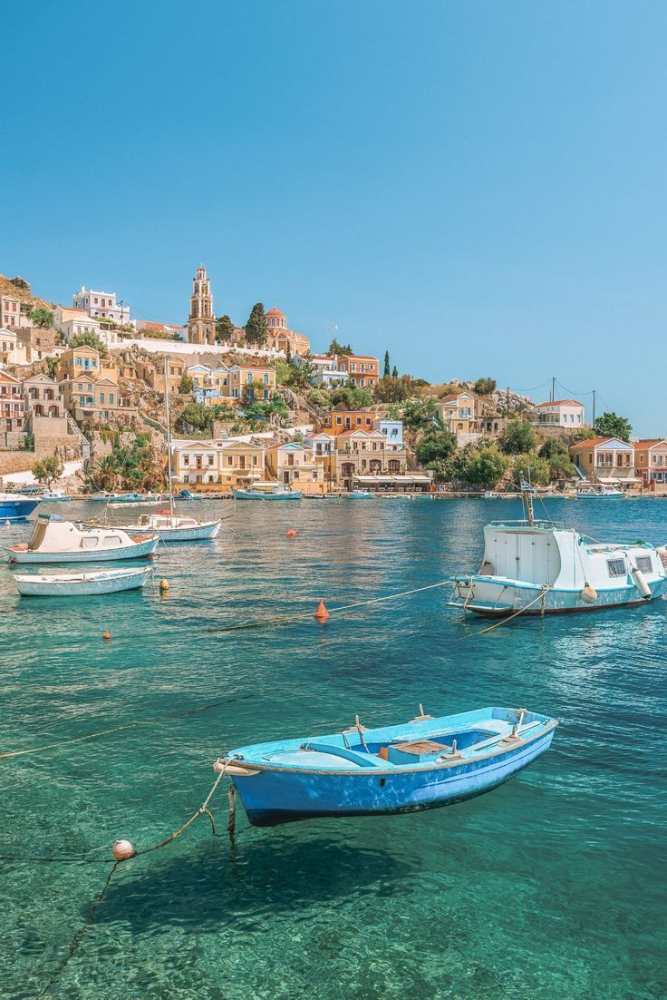
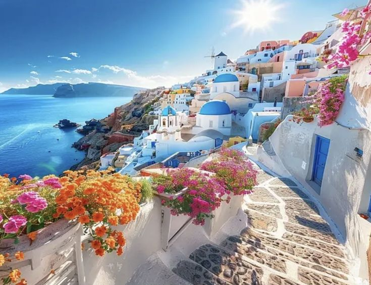

Galeri Santorini



Santorini adalah pulau paling ikonik di Yunani yang terkenal dengan bangunan putih beratap biru yang berdiri di tebing menghadap Laut Aegea. Keindahan arsitektur khas, laut biru jernih, serta pemandangan sunset yang romantis menjadikan Santorini salah satu destinasi wisata terbaik di dunia.
Selain panorama alamnya, Santorini juga menawarkan budaya khas Yunani, kuliner laut segar, serta suasana kota kecil yang tenang dan eksotis.
Kembali ke Beranda